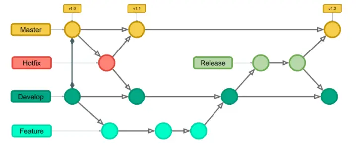

Modificar atributos HTML
JavaScript también nos permite modificar de forma dinámica los atributos HTML de nuestras páginas.
Por ejemplo, imagina que queremos que cuando el usuario haga click en un botón, se muestre una imágen que previamente esta oculta:

Para ello, podemos añadir un evento al butón con una función para que, si se hace click, entonces muestre la imagen oculta modificando el atributo class del elemento img. Esto se puede hacer gracias al evento onclick de JavaScript:
< button
type="button"
onclick='document.getElementById("imagenOculta").classList.remove("hidden")'
>
Haz click para mostrar la imagen oculta
< /button >